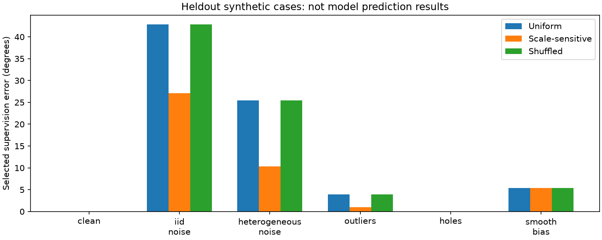
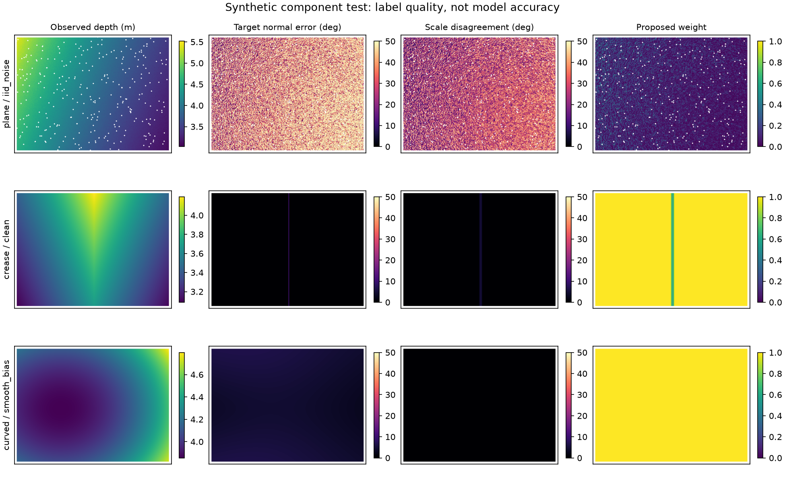
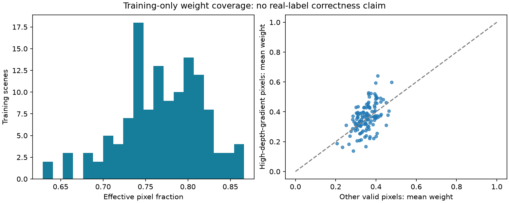

ELEC4240 | 2 October 2026 | Component study, not a model-training result
Does construction-scale sensitivity identify unreliable normal supervision?
Outcome: the frozen engineering screen passed. In the predeclared noisy synthetic conditions, weighting reduced selected-supervision error by 46.76% relative to uniform weights. It did not meaningfully detect smooth systematic bias. No adapted-model accuracy improvement has been demonstrated.
The rule computes normals from the same depth at sigma 1, 2 and 4 pixels, averages their pairwise angular differences, and assigns w = exp(-disagreement_deg / 10). Only the extra geometric penalty receives these weights. Existing supervised losses and evaluation masks remain unchanged.
Completed work and evidence
- 192 analytic synthetic cases, including 96 cases from four heldout generator seeds. Generator families are shared; this is not independent real-world validation.
- All 128 frozen V7 training scenes audited. The sigma-1 normal targets were reproduced exactly and native geometry masks were preserved.
- Six unit tests passed. Three training images and four conditions produced twelve finite forward/backward checks, with zero optimizer updates.
- Uniform-weight replacement loss differs from the frozen V7 objective by 0. Peak allocated GPU memory in the integration checks: 3415.5 MiB. This is not a full optimizer-memory benchmark.
- 1296 historical report/result files and all pinned V7 sources remain unchanged.
Heldout synthetic label-selection error
All values are macro-averaged normal errors in degrees over the same retained support. Lower is better. The predicted labels themselves are not corrected: the weighting changes which labels contribute most strongly to a prospective loss. Shuffling preserves the weight distribution.
| Condition | Uniform | Proposed weighting | Shuffled weights |
|---|
| clean | 0.0151 | 0.0102 | 0.0151 |
| iid noise | 42.8378 | 27.0602 | 42.8412 |
| heterogeneous noise | 25.4342 | 10.3745 | 25.4251 |
| outliers | 3.8903 | 0.9855 | 3.8899 |
| holes | 0.0152 | 0.0102 | 0.0152 |
| smooth bias | 5.3561 | 5.3554 | 5.3562 |
Noise, heterogeneous noise and outliers show useful discrimination under the synthetic assumptions. Filled-hole residual error is already near zero after the original mask; its small numerical reduction is not a substantial practical gain. Smooth bias retains about 5.36 degrees of error despite almost unit weights: a clear failure case.

Predeclared engineering gate
| Check | Observed | Threshold | Outcome |
|---|
| noise relative reduction | 0.4676 | >=0.10 | PASS |
| shuffled relative reduction | 0.4675 | >=0.05 | PASS |
| noise families nonworse | 4.0000 | >=3 of4 | PASS |
| synthetic median effective fraction | 0.6957 | >=0.25 | PASS |
| clean surface max increase deg | 0.0000 | <=1.0 | PASS |
| real scene fraction effective ge 0 25 | 1.0000 | >=0.90 | PASS |
These are screening criteria, not p-values or Holm-adjusted claims. Pixels were not treated as independent trials. Passing permits further integration and baseline work; it does not establish a causal explanation of V7 negative transfer.
Boundary and failure inspection
The following boundary summaries use the already declared boundary band and report clean or smoothly biased cases. They are descriptive and add no hypothesis tests.
| Surface / condition | Uniform error | Weighted error | Mean weight |
|---|
| crease/clean | 1.5353 | 1.2558 | 0.8140 |
| crease/smooth_bias | 5.8561 | 5.7350 | 0.8167 |
| step/clean | 0.0000 | 0.0000 | 0.3470 |
| step/smooth_bias | 5.5413 | 5.5418 | 0.3498 |

Real training-scene coverage
Mean native weight: 0.3630. Median effective pixel fraction: 0.7693. Effective fraction measures concentration of weights, not the fraction of pixels deleted; the original validity support is unchanged. Real-world normal correctness is not known independently.

Next experiment
First inspect single-task learning curves. Then freeze the seven-condition, three-seed model comparison: depth-only, normal-only, joint-only, uniform geometry, weaker uniform geometry, proposed weighting and shuffled weighting. Report metric depth without ground-truth alignment, normal accuracy, task tradeoffs and compute. The six primary development contrasts compare weighted versus uniform/weaker/shuffled for both task metrics, with Holm adjustment. No full ablation or new independent cohort has been run.
Complete experiment plan | Frozen component protocol | Analysis | GPU checks | Colab notebook | Portable source bundle
The notebook reruns the synthetic component only and has not been run in a Google-managed runtime. It needs neither an account token in code nor raw project image uploads. Follow the official Colab upload instructions.
Claim boundary and related work
GeoWizard already studies joint diffusion-based depth and normal estimation; Li et al., MICCAI 2025 study distance-based uncertainty in geometric consistency. A future novelty claim must compare the proposed construction-scale proxy against relevant reliability rules. Current evidence supports only a bounded component feasibility result.
Protocol SHA-256: 3474436a130f79724acec25d1c43e009d842fda6bfa27921540bd98dde719eec
Raw weights remain local, outside Git. Existing final-report PDF unchanged.